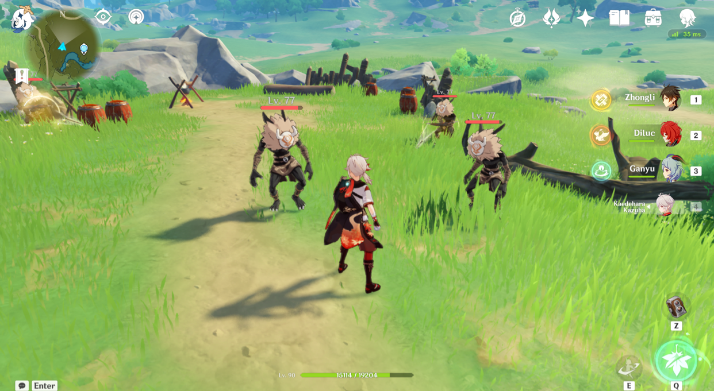
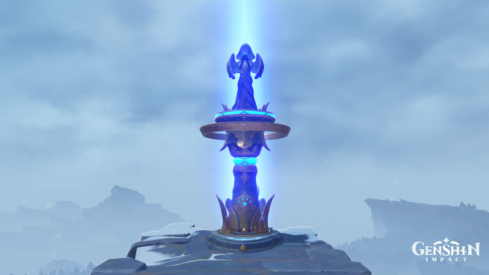
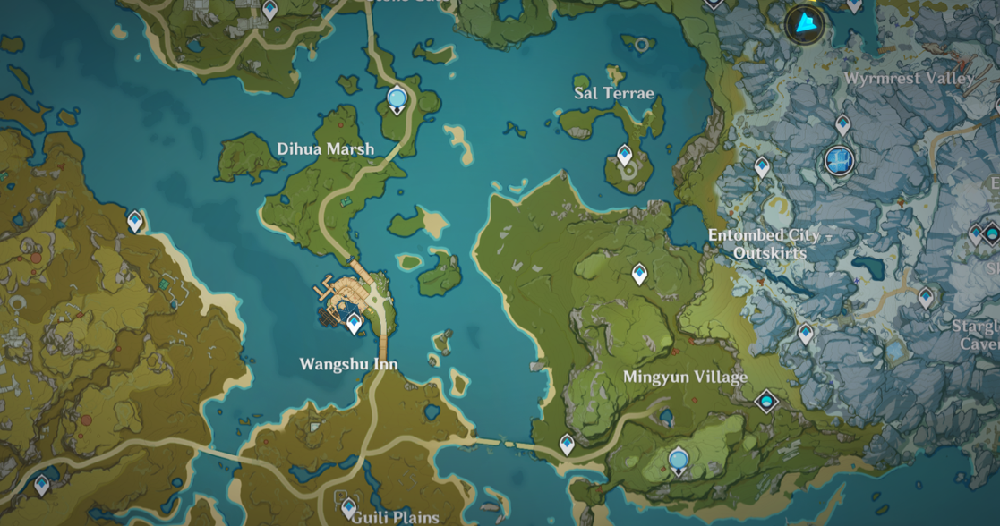
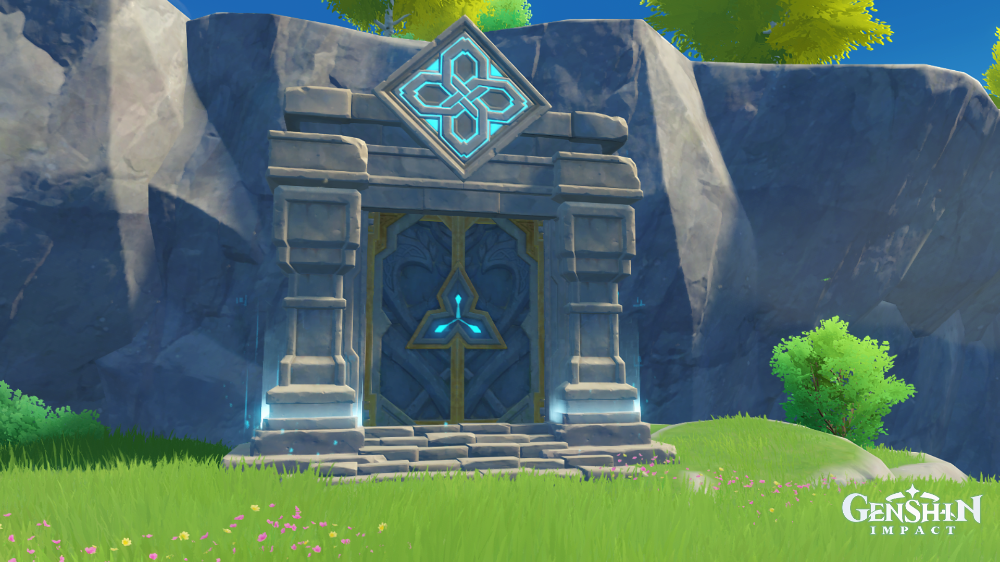
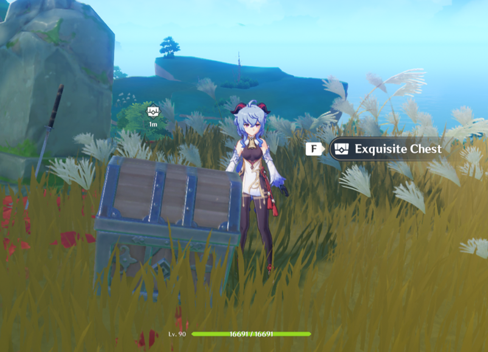
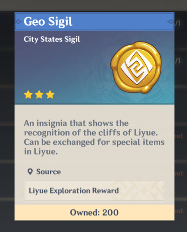
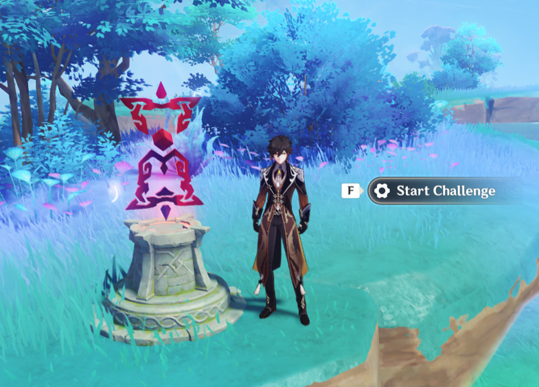
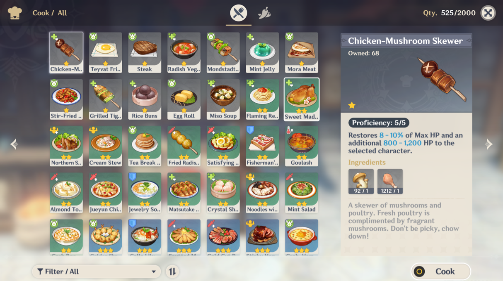
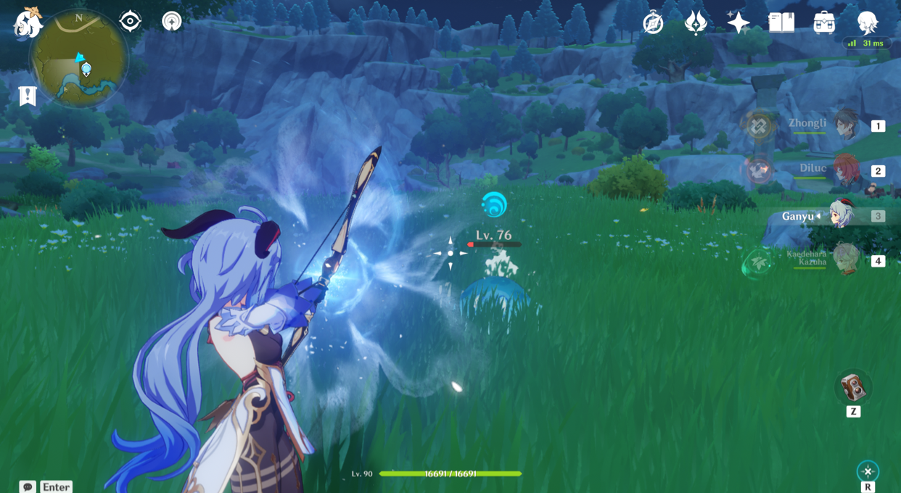
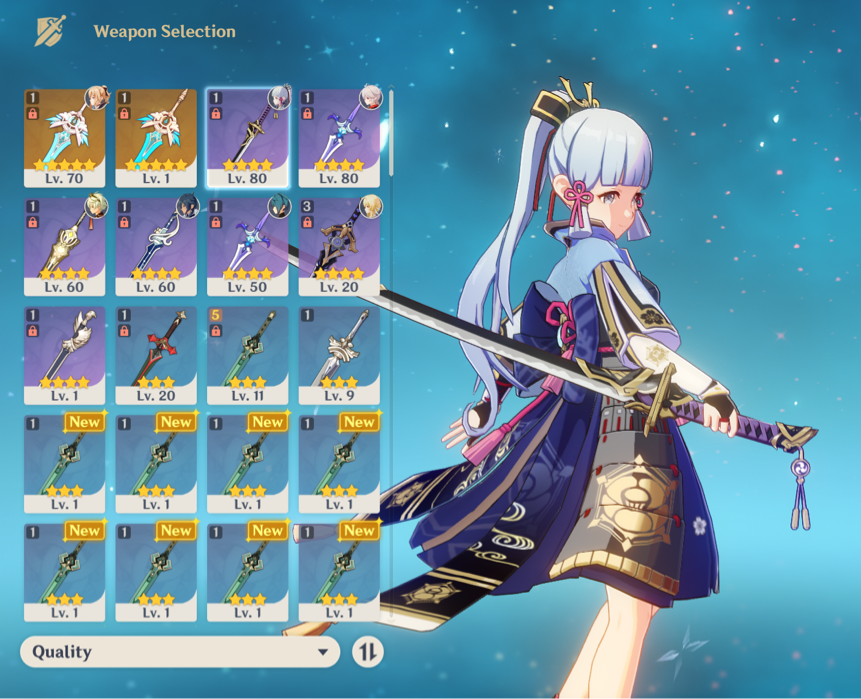

Genshin Impact
Genshin Impact is an open-world, fantasy RPG (role-playing game) developed and published by the Chinese company MiHoYo. The game was first released on September 28, 2020, and quickly became popular throughout the gaming industry, due to the amazing visuals and variety of gameplay. Genshin Impact also heavily relies on a gacha system, which is a mechanic that encourages players to spend in-game currency in order to receive random game items such as characters or weapons. The game is free to play and has a lot of content players can go through, for instance, the main story, lots of quests, challenges, bosses, and more. As more updates come to the game, Genshin Impact will continue to grow and have even more to offer.
Players can explore the world of Teyvat with their own team, or alongside other players as well thanks to the multiplayer option that allows up to 4 players in one world. Genshin Impact has been released on PC (Windows), iOS, Android, PlayStation 4, and PlayStation 5. The game supports cross-platform gameplay between all devices that the game is available on, allowing maximum flexibility for players. MiHoYo has also been planning to release Genshin Impact on the Nintendo Switch. However, no specific date has been announced yet.
Gameplay
There are 7 elements that exist in the fantasy world of Teyvat, and each character possesses one of them. The natural elements include Anemo, Geo, Electro, Cryo, Hydro, Pyro, and Dendro. These elements can interact with each other to produce reactions, which can provide extra assistance in combat.
In Genshin, players can take the role of any of the 48 released characters, and bring them along on adventures. There can be a maximum of 4 characters in a single party and players can quickly switch between them during battles to perform different attacks. Each character has their own set of specific talents and abilities that are unique to them. A character’s overall calibre can be improved by levelling up, or by equipping suitable artifacts (*in-game spelling) and weapons on them. More information can be found in the Combat section below.
Exploration
There is so much to see and do in Teyvat, as players explore the open world, they’ll come across many things such as:
- Statues of the seven, teleport waypoints, and oculi. ⇒ Players must interact with statues and teleport waypoints in order to unlock them. Teleport waypoints are specific points on the map that players can teleport to for convenience. Statues of the seven can also act as teleport waypoints, but they can additionally heal any characters that come near the monument. Oculi is collected and used to level up Statues of seven, which can give rewards. (Statues of the seven are carved in the shape of the nation’s god, each type of statue represents one of the seven elements in Teyvat.)
-  
- Domains. ⇒ Domains are challenges, located in special buildings that players can complete in order to earn rewards. Once unlocked, a domain can be teleported to using the map.
- 
- Chests and sigils. ⇒ Chests can be found all over Teyvat and can also be given when completed domains. Chests reward the player with game currency, experience points, a variety of character enhancement materials, and sigils. Sigils are used to exchange items in souvenir shops.
-  
- Puzzles and challenges. ⇒ Puzzles and challenges can be found all over the open world for players to give a try. Completing them can spawn chests.
- 
- Food and ore. ⇒ Food and ore can be found and mined in the wild. The food that is found can be eaten to enhance a character’s abilities or used to create more dishes that provide different bonuses. Ore is used for levelling up weapons or to craft certain weapons.
- 
A player’s exploration progress is displayed on the world map and there are many items that can be obtained through exploration that can further enhance a player’s gaming experience. It is also possible to come across limited-time items during events.
Combat
The combat in Genshin Impact is action-based and lets players take their four characters into battle. Enemies are found all over Teyvat and get triggered when a player comes within a certain distance of them. Enemies will become stronger the higher level a player becomes, therefore, in order to beat them more easily, players must level up their characters and put better equipment on them. All the characters have their own unique elemental skill and elemental burst. The elemental skill can be used anytime except when on cooldown, which is a set amount of time that a player needs to wait before being able to use the skill again. The elemental burst needs to be charged up with elemental energy that can be obtained from defeating enemies before it can be used. Both the elemental skill and burst ability apply the relative element that the character controls.
 In combat, elemental reactions can also play a big role, the way elements react with each other can either produce beneficial or detrimental effects for the team. Elemental resonance is when there are specific combinations of characters with certain elements in the party, elemental resonance can provide the team with bonus talents when used appropriately.
Crafting
Crafting is a game mechanic that allows players to create various materials to help with exploration and combat. Systems that players are able to use are:
- Cooking: for food that players can eat to boost their offence and defence.
- Alchemy: for talent, weapon, and character level-up materials. It is also possible to craft potions that can provide special effects in battle.
- Forging: for new weapons that can be used on characters.
- Creation: a unique crafting system within the Serenitea Pot (housing system), it is used to create furniture or items that can be placed within the Serenitea Pot.
Storyline
Setting
The story in Genshin Impact is one of the main events in the game. It takes place in the world of Teyvat, which is separated into 7 nations: Mondstadt, Liyue, Inazuma (there has also been a release of Enkanomiya, which is a sub-region of the nation of Inazuma), Sumeru, Fontaine, Natlan, and Snezhnaya. Each of the nations is ruled over by gods known as Archons, and each of the Archons is related to one of the seven elements in Teyvat. However, apart from the seven nations, there was once a nation called Khaenri’ah that lived without the authority of gods.
↳Currently, only the nations of Mondstadt, Liyue, and Inazuma have been released in the game.
Celestia is a floating island that very few people understand. During the right time, it can be seen in the sky above Teyvat. Not much information is known about the mysterious body.
Plot
The story begins with two twins that like to travel through many different worlds together, but when they arrive in Teyvat, their path is blocked by an unknown god. She manages to capture one of the twins and seals away the powers of the other (this twin is the first character players receive in the game, also known as the traveller). Several hundred years later, the sealed twin awakens and meets Paimon, who becomes their travelling companion. Together, they venture around the world of Teyvat looking for the traveller’s lost twin.
*The bibliography for the website can be found here: Citations